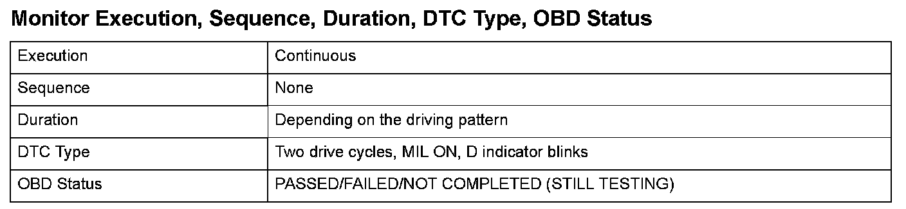
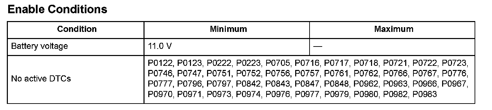

P1780
DTC P1780: Problem in Shift Control SystemGeneral Description
When the powertrain control module (PCM) detects a mechanical malfunction in the automatic transmission, the transmission switches to a default mode according to the malfunction, and this DTC is stored.

Monitor Execution, Sequence, Duration, DTC Type, OBD Status

Enable Conditions
Malfunction Threshold
The A/T control switches to the default mode due to a mechanical malfunction.
Driving Pattern
Start the engine, and accelerate the vehicle until the transmission shifts into 5th gear in the D position.
- Drive the vehicle in this manner only if the traffic regulations and ambient conditions allow.
Diagnosis Details
Conditions for illuminating the MIL
When a malfunction is detected during the first drive cycle, a Temporary DTC is stored in the PCM memory. If the malfunction recurs during the next (second) drive cycle, the MIL comes on and the DTC and the freeze frame data are stored.
Conditions for clearing the MIL
The MIL will be cleared if the malfunction does not recur during three consecutive trips in which the diagnostic runs.
The MIL, the DTC, the Temporary DTC, and the freeze frame data can be cleared by using the scan tool Clear command or by disconnecting the battery.